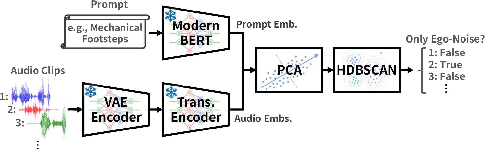
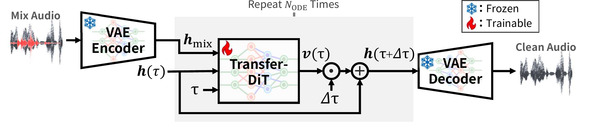
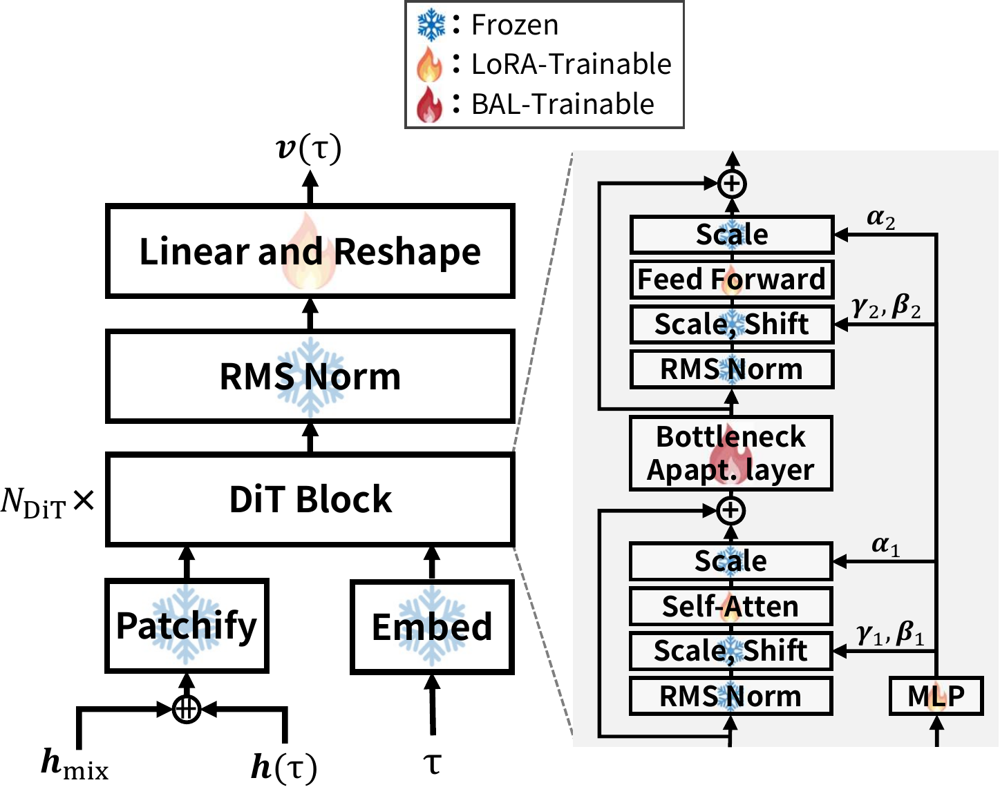
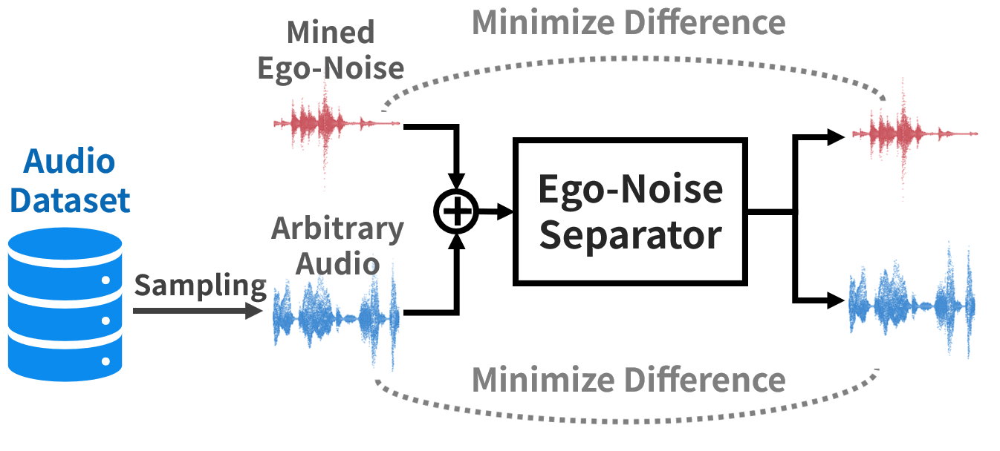

Introduction
Mobile security robots are expected to autonomously patrol indoor and outdoor facilities and detect anomalous events. Legged robots are especially promising for this role because they can traverse steps, stairs, and uneven terrain that are difficult for wheeled robots. While cameras provide strong visual recognition, they are limited by line of sight, occlusion, and darkness. Acoustic sensing complements vision because sound can propagate from outside the camera view and behind obstacles.
A major obstacle to acoustic sensing on legged robots is ego-noise: the sound generated by the robot itself. Foot-floor impacts, joint actuation, motors, and body vibration are captured by the onboard microphones, and impact-like footsteps can mask a wide range of environmental sounds. This not only degrades anomalous sound classification but also makes it harder for remote operators to understand the acoustic situation around the robot.
This project studies adaptive ego-noise separation for legged security robots. Instead of requiring clean ego-noise recordings in a quiet environment or manual segment annotations, the proposed framework mines ego-noise-dominant clips from ordinary robot-operation recordings and uses them as pseudo-supervised data. Transfer-DiT then adapts a pretrained generative audio separator to the target robot and environment, suppressing robot-specific ego-noise while preserving open-set environmental sounds.
Proposed Method




Overall Evaluation
We evaluate ego-noise separation on environmental sounds mixed with robot ego-noise from Unitree G1 and Unitree Go1 at -6, 0, and +6 dB SNR. Tables report mean separation scores and zero-shot classification scores by method, robot, and SNR; the best value in each robot-SNR column is shown in bold.
Demo
Each example shows references first, followed by separated target estimates from each method.
CLAP Score is the CLAP audio embedding cosine similarity between the target and the separated estimate. SAJ Score is the overall separation judgment score. Higher is better.